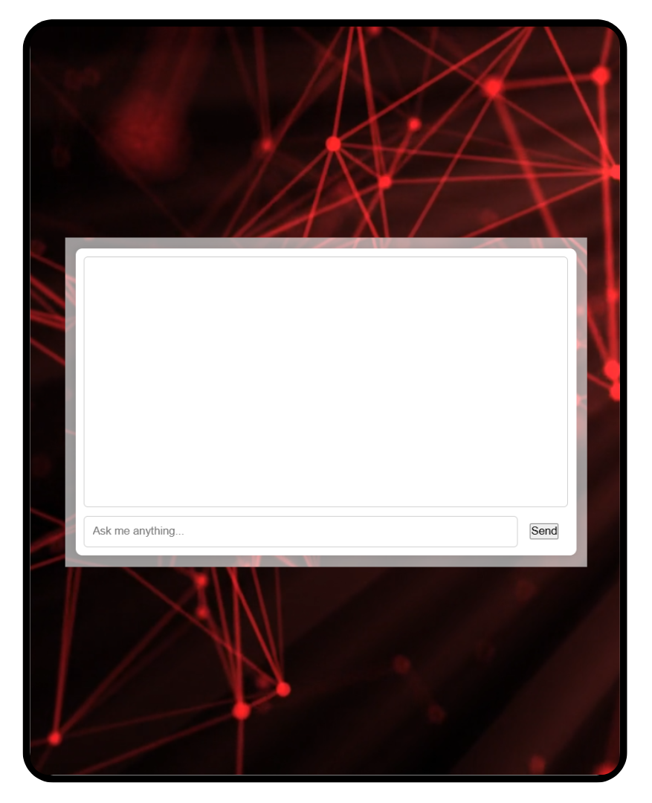

I was reposting content back in the day, so to make work easier, I wrote a script that crops long-form videos
into 2-minute clips, adds a display picture at the start, and exports them in batches. I perfected the script after a lot
of trial and error, you can check out my Tiktok page.
Techniques & Concepts Used:
- PIL and MoviePy for image/video manipulation
- 9:16 formatting and cover insertion
- Automated video splitting with batch export
For my FYP, I developed a system for blind students to navigate university campuses, particularly on detecting and
reading out Lecturer Room Name signs. Learnt a lot about machine learning, from model training to real-world application,
and how to tailor models to meet specific user needs. This project has two main parts:
Project Overview:
- Sign Detection: Trained a YOLO model to detect name signs with over 90% accuracy, using a self-created dataset
of manually captured and annotated images, designed for real-time performance.
- OCR and Text-to-Speech: After facing challenges with building a custom OCR model, I integrated Tesseract OCR
which successfully read signs with over 80% accuracy. I also added a TTS making accessible through audio for blind students.
Developed a dynamic webpage tailored for movie enthusiasts that facilitates real-time interaction and review updates.
This project combined user and admin functionalities with robust back-end technologies.
Project Insights:
- Utilized PHP to craft dynamic web pages and handle server-side logic. Employed SQL databases to manage user data and movie reviews.
- Implemented Create, Read, Update, Delete operations to provide a comprehensive user experience in managing reviews and user profiles.
- Real time updates for enhancing user engagement and interaction.
Built this to practice DOM manipulation and CRUD operations in vanilla JavaScript. I focused on keeping the UI
clean while adding features like filtering, task editing, and dark mode. It helped me understand how localStorage
works and how to structure small but complete front-end apps.
Techniques & Concepts Used:
- JavaScript DOM manipulation and CRUD logic
- LocalStorage for persistent state
- UI state filters, editing, and dark mode toggle
Developed and customized the front-end for an admin panel, optimizing user experience and system monitoring capabilities.
Due to company privacy policies, only this generic version of one of the pages can be shown.
Key Learnings:
- Integrated interactive charts and custom JavaScript for UI interactions like tooltips and data visualizations.
- Implemented Font Awesome, Bootstrap Icons, and Overlayscrollbars to enhance UI components and aesthetics.
- Gained proficiency in web design fundamentals such as text ellipsis, text shadow, color gradients, and overall website color palette.
Developed a custom Raspberry Pi setup to deliver a smooth, user-friendly kiosk experience for public interaction,
with a focus on optimizing both the operating system and the user interface.
Project Highlights:
- Modified the OS for kiosk use and automated key processes including auto-login and system startup.
- Used Python to develop simple UI's and custom splash screens to improve user experience.
- Crafted bootable backups and image files for efficient system replication.
This was a simple number learning app I built for a Mobile App Development practical. It lets kids compare, order,
and compose numbers with instant feedback. I kept the interface colorful and playful, added disappearing text, and
used sounds to make the learning process more engaging and fun.
Techniques & Concepts Used:
- Java (Android Studio) – event-driven activities
- Interactive UI with audio-visual feedback
- Random number generation, input validation, and conditional checks
This was my attempt to build something more interactive using just JavaScript and the HTML5 Canvas API. I focused on
structuring the game loop, handling user input, and detecting collisions. It really helped me understand coordinate-based
logic, frame timing, and basic state management in games.
Techniques & Concepts Used:
- Canvas API for rendering dynamic 2D visuals
- Keyboard event handling for directional input
- Game loop design and collision detection logic
I added a recommendation feature to an e-commerce site I was exploring. When users add something to cart, the system
shows similar products based on category and price. It was a good way to learn conditional rendering, dynamic filtering,
and how to improve UX without using actual AI models.
Techniques & Concepts Used:
- Rule-based filtering (category + price range)
- Conditional rendering in React
- Data handling with Redux and FakeStoreAPI
I was scrolling IG one day and saw someone recreate Harry Potter’s cloak using OpenCV, so I decided to try it myself. I
used background subtraction to hide red objects on camera. I also added basic voice commands using Python’s speech
recognition module, which taught me about real-time input handling.
Techniques & Concepts Used:
- HSV color masking and binary masks
- Background subtraction using static frames
- Basic voice recognition and multithreading in Python
After building the invisibility cloak project, I got curious about OpenCV’s creative potential. This led me to try
real-time cartoonification using bilateral filtering and adaptive thresholding. It was a fun way to explore edge masks,
color smoothing, and frame blending with live webcam feeds.
Techniques & Concepts Used:
- Bilateral filtering for preserving edges while smoothing textures
- Adaptive thresholding and grayscale masking for cartoon effects
- Real-time frame capture, manipulation, and display
This was just me playing around with pre-trained AnimeGAN models out of curiosity. I tried different styles on a single
image and generated a 2×2 comparison grid. Along the way, I learned a bit about GPU memory handling and batch processing
using PyTorch and OpenCV.
Techniques & Concepts Used:
- Pre-trained model inference with PyTorch
- Image stylization and layout with OpenCV
- Manual GPU memory cleanup (torch + gc)

After finishing AI course from Nvidia, I got more interested in AI and language models. I started exploring Hugging Face’s
LLMs with the goal of building a chatbot that can answer questions about me - like my results, strengths, weaknesses, and
project experience.
Techniques & Concepts Used:
- Prompt engineering with open-source LLMs
- Personalization and context injection
- Initial exploration of chatbot architecture and RAG-based flows
I’m currently exploring a few project ideas that I'm excited to build next. These include tools powered by AI and creative
logic like a Splitwise clone, a Rubik’s Cube solver, and an AI exam predictor. Still figuring out where to begin. Stay tuned
for what’s coming!
Project Ideas:
- Splitwise Clone – shared expenses tracker
- Rubik’s Cube Solver – vision + algorithm based
- AI Course Builder – personalized syllabus creator
- AI Exam Predictor – forecast scores based on history